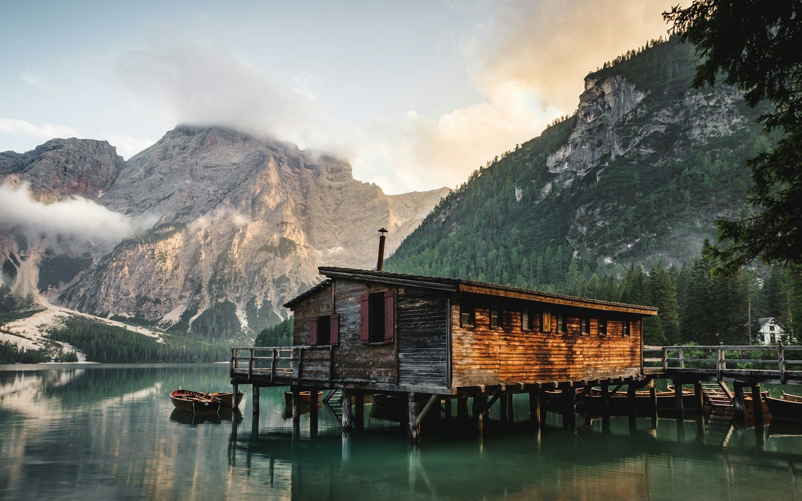
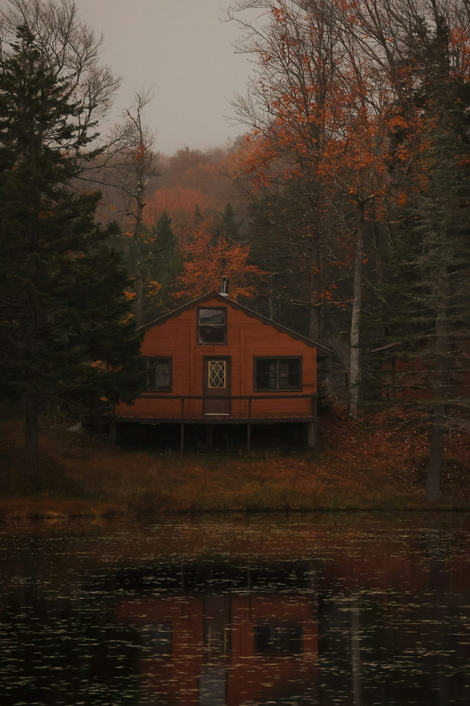
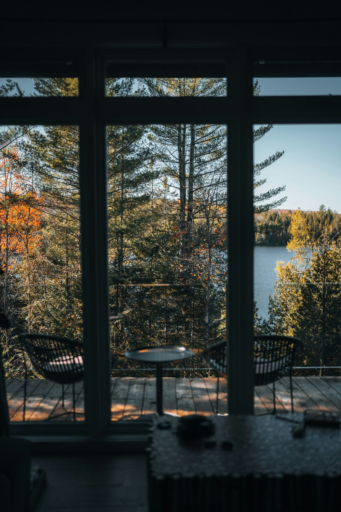

A LITTLE CLOSER TO NATURE湖畔の小さな宿
予定を、ひとつ減らして。
湖畔で、
なにもしない休日。
STAY SLOW. FEEL MORE.この場所のこと ↓
THE ART OF DOING NOTHING
いつもの速さを、
ここに置いていく。
カーテンを開けると、湖がある。
淹れたてのコーヒーを持って、外へ出る。
風が変わるまで、ただ眺めている。
行き先を詰めこまない旅も、きっといい。
NAGIは、そのための小さな宿です。

THE LAKE / THE WOODS / YOUR OWN TIMEROOMS
窓の外まで、
ひとつの部屋。
誰と、どんな時間を過ごすか。
ふたつの部屋から、お選びください。

LAKE TERRACELake terrace
レイクテラス
窓辺で本を開いたり、テラスで朝食をとったり。水面の移ろいを眺めて過ごす、ふたり向けの部屋です。
- 広さ
- 48㎡ + テラス
- 定員
- 2名
- 設備
- バス / ミニキッチン / Wi-Fi
客室名・設備はデモ用の設定です。写真は滞在イメージです。
ある日の、NAGI。ここでは、
ここでは、
一日が少し長い。
何をするか、決めなくてもいい。
光が変わるたび、居場所を変えてみる。
07:00
水面が、目を覚ます。
コーヒーが冷めるまで、湖畔のベンチで。予定のない朝を、ゆっくり始める。
場面を選ぶと、写真と過ごし方が変わります。施設・サービスは架空の設定です。
部屋を、比べる。ふたりの旅か。
ふたりの旅か。
みんなの休日か。
広さだけでなく、過ごし方で選ぶ。
どちらも、食事の時間に縛られない素泊まりです。
| 過ごし方 | レイクテラス | フォレストキャビン |
|---|---|---|
| こんな旅に | ふたりで静かに過ごす | 家族や友人と料理を楽しむ |
| 人数・広さ | 2名 / 48㎡ | 2〜4名 / 65㎡ |
| 外の居場所 | 湖向きのテラス | 木々に囲まれたデッキ |
| 食事の支度 | ミニキッチン | キッチン・ダイニング |
| 参考料金 | 1室 ¥28,000〜 / 泊 | 1棟 ¥38,000〜 / 泊 |
税込・素泊まりの架空料金です。実際の予約・価格照会はできません。
BEFORE YOUR STAY
お越しになる前に
気になることは、ここで少しだけ。
食事は付いていますか？+
素泊まりの宿です。食材を持ち込んで、客室のキッチンで料理を楽しめます。
チェックイン・アウトは何時ですか？+
デモ上の設定はチェックイン15:00、チェックアウト11:00です。
車がなくても行けますか？+
実在する施設ではないため、交通案内は掲載していません。実際のサイトでは最寄駅・送迎・駐車場の案内をこの場所に掲載できます。
YOUR NEXT QUIET DAYS
次の休日に、余白を。
部屋と日程を選んで、滞在のイメージを確かめる。
操作サンプルです。予約・空室照会・外部送信は行いません。